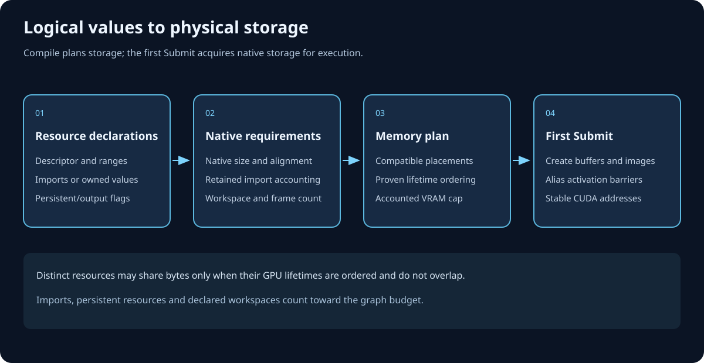

Renderer quick guide
Invoke registered operations, wire logical outputs, compile once and execute repeatedly.
Learning objectives and prerequisites
Learn the renderer-facing composition model. Start with graph edit lifetime and frozen parameters. For complete class definitions and all pipeline families, use the node recipes.
Library setup and ownership
A node class contains its own shader registration, parameter schema, output declaration and execution hook. The common base handles type registration and shared immutable preparation. A node declares its hardware and environment needs through static GetRequirements; unsupported attachment fails before its output declaration or preparation. See feature admission and failure handling. The renderer does not create binding layouts or binding sets. Attachment derives layouts from shader metadata. Compilation infers pipeline patterns and plans storage; the first submission allocates declared outputs and prepares native PSOs, descriptor tables and shader tables for each frame slot.
Each node header publishes a named global callable with ARDA_DECLARE_GRAPH_NODE(NodeClass, InvocationName), and its implementation defines it once with ARDA_DEFINE_GRAPH_NODE. Include the header, link the implementation and call InvocationName(Edit, Parameters) or pass the parameter fields directly. Invocation registers automatically; explicit NodeClass::Register() supports registry discovery before graph use. Read the complete registration walkthrough to add a node. Keep shader registration in its implementation.

Compose operations
This complete assembly uses the compiled compute recipe. The node header publishes ComputeWrite as its named global callable. Record an operation with ComputeWrite(Edit, Parameters), or pass positional fields with ComputeWrite(Edit, FArdaDependencyResourceHandle{}, uint32_t{123}). The operation declares its output automatically. Readback is a separate consumer, so its resource edge determines order. Retain the graph as renderer state instead of reconstructing it for each frame.
FArdaRHIStatus RunComputeRecipe(FArdaRHIDeviceRef Device)
{
// Readback retains the producer chain and publishes its result after execution.
FArdaDependencyGraph Graph(Device);
FArdaGraphEdit Edit(Graph);
const auto Compute = ComputeWrite(Edit, {{}, 123}).GetBuffer("Output");
const auto Bytes = Readback(Edit, Compute);
// Queue this construction, then select or compile its persistent revision.
if (auto S = Edit.Commit(); !S)
{
return S;
}
if (auto S = Graph.Compile(); !S)
{
return S;
}
// Replay the same compiled graph across frames.
for (unsigned Frame = 0; Frame < 3; ++Frame)
{
const auto Run = Graph.Execute();
if (!Run.mStatus)
{
return Run.mStatus;
}
// The synchronous convenience call completed the readback; validate the observable result.
uint32_t Value = 0;
if (Bytes->size() != sizeof(Value))
{
return FArdaRHIStatus::Error(EArdaRHIResult::InvalidState, "Unexpected readback size.");
}
std::memcpy(&Value, Bytes->data(), sizeof(Value));
if (Value != 123)
{
return FArdaRHIStatus::Error(EArdaRHIResult::InvalidState, "Unexpected compute-graph output.");
}
}
return {};
}The example writes and verifies 123 three times. Its synchronous readback deliberately waits for the requested CPU result; ordinary graph replay can use asynchronous execution and completion handling described in execution. The graph owns its transient physical resources through retirement.
Changing inputs and targets
Frozen parameters, shapes and resource identities change inside an edit. For per-frame data, use a synchronized upload node or imported storage and preserve the graph's entry-state contract. A graph per swap-chain image is useful when each graph retains a stable imported target; retain each graph until its accepted work retires. Node-owned intermediate buffers and textures are obtained using the operation's GetBuffer / GetTexture.
Terrain composes UploadSettings → Generate → Erode → Triangulate → Draw, with a separate camera upload and overlay. PixelSort composes UploadFrame → Noise → CUDA Sort → Present. Cornell keeps BLAS/TLAS assets externally and rebuilds its TLAS through a node every execution. None of their shader-recording hooks create binding sets or ray tables.
Summary and checkpoints
Operation authors declare semantics; renderer authors compose operations; ArdaInductor supplies physical execution state. Can you identify which output causes each edge? Which inputs persist across frames? Which change requires recompilation? Follow failure cases before authoring a new class.
Further reading
Compute, CUDA, ray, mesh, raster and work-graph recipes; scheduling algorithms; resource lifetime; canonical APIs.